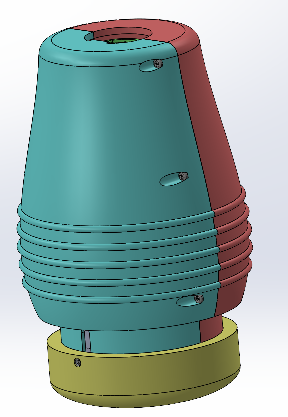
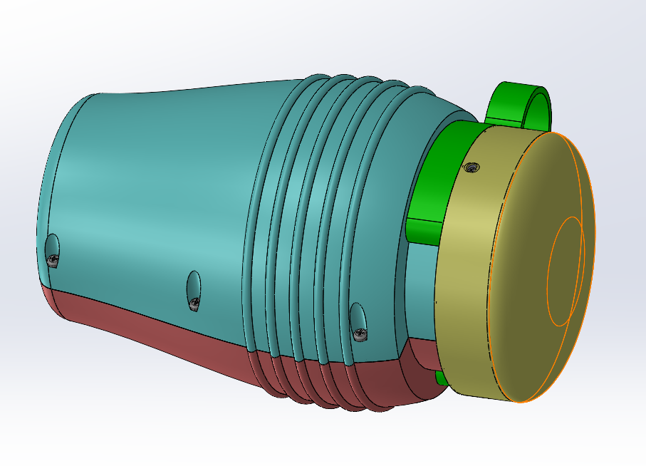
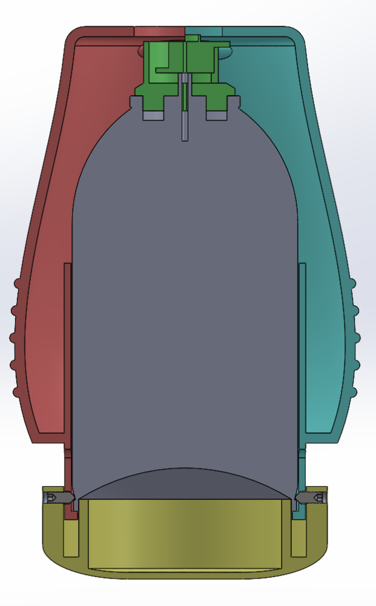
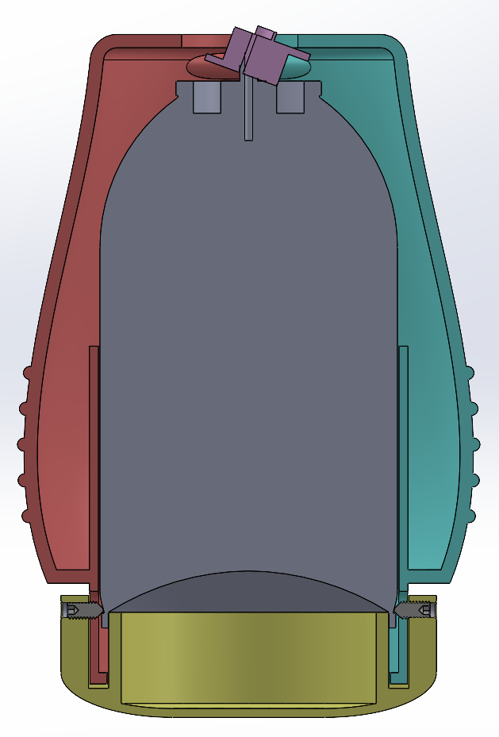

Prototype Development
From CAD architecture to reusable build.
Current development is focused on integration quality, activation reliability pathways, and validation readiness.
Prototype states shown below include safe (clip installed), armed (clip removed with visible base-to-housing gap), and triggered (housing fully seated against base after impact).






How the Prototype Works
Current Actuation Concept
This describes the current prototype mechanism under development. The design is intended to remain safe before deployment, be simple to arm, and then activate on impact after landing inside the bin. The specific travel distances, force transfer consistency, and discharge reliability are being validated through ongoing prototype cycles.
-
1
C-clamp / safety clip
The prototype uses a C-clamp style retaining piece to hold the top assembly in the safe position. This piece is removed before use. Removing the clamp arms the device.
-
2
Armed state
Once the clamp is removed, the mechanism is set and ready. The device can then be dropped into the trash can after pickup.
-
3
Impact event
When the prototype impacts the bottom of the trash can, the top piece drives downward. That downward motion transfers force into the actuator path.
-
4
Actuation
The top piece slamming down actuates the internal mechanism. This actuation is intended to trigger the can to discharge.
-
5
Purpose of the design
The concept is engineered to keep the device safe before deployment, make arming straightforward, and use impact activation upon landing inside the bin.
The mechanism shown here is a current prototype concept. Final reliability outcomes depend on test matrix results and iterative build tuning.
Engineering & Prototype Development
Active Development Questions
The program is actively working through the questions below to tighten trigger reliability, actuator consistency, and end-to-end performance under realistic drop conditions.
Test Matrix Planning
- How many prototypes? How many prototypes should be manufactured for testing?
- Configurations: Should different prototypes use different configurations?
- Drop targets: How many cans are needed for drop testing?
- Conditions: What drop heights and impact angles should be tested?
Trigger & Actuation Refinements
- Reliability: How do we improve trigger reliability?
- Flow path: What nozzle / valve / internal geometry changes should be evaluated?
- Dynamics: What weight distribution best supports self-righting and reliable actuation?
Need full partner context for the validation path?
Review mechanical, formulation, and testing collaborators.